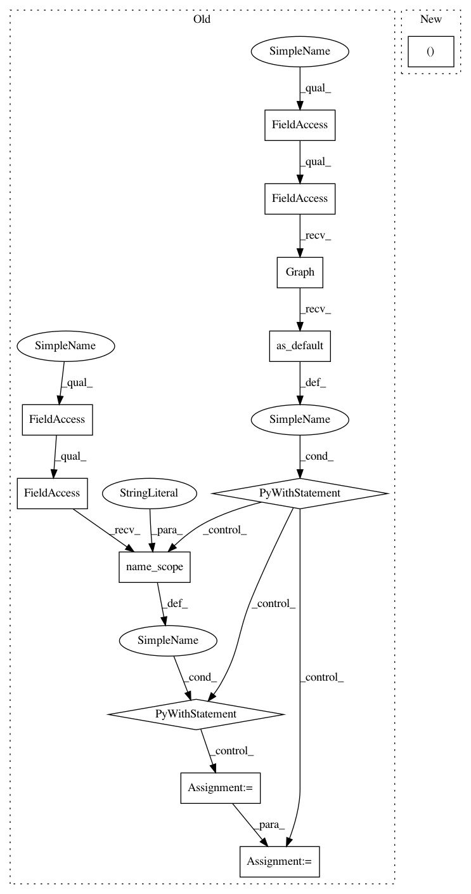

97507c4871dff5fb5e4bd33d2f5cf3f8bd3aceba,tensorflow_transform/beam/impl.py,_AnalyzeDatasetCommon,expand,#_AnalyzeDatasetCommon#Any#,755
Before Change
else:
input_tensor_adapter_config = input_metadata
with tf.compat.v1.Graph().as_default() as graph:
with tf.compat.v1.name_scope("inputs"):
specs = TensorAdapter(input_tensor_adapter_config).OriginalTypeSpecs()
input_signature = impl_helper.batched_placeholders_from_specs(specs)
// In order to avoid a bug where import_graph_def fails when the
// input_map and return_elements of an imported graph are the same
// (b/34288791), we avoid using the placeholder of an input column as an
// output of a graph. We do this by applying tf.identity to all inputs of
// the preprocessing_fn. Note this applies at the level of raw tensors.
// TODO(b/34288791): Remove this workaround and use a shallow copy of
// inputs instead. A shallow copy is needed in case
// self._preprocessing_fn mutates its input.
copied_inputs = impl_helper.copy_tensors(input_signature)
output_signature = self._preprocessing_fn(copied_inputs)
// At this point we check that the preprocessing_fn has at least one
// output. This is because if we allowed the output of preprocessing_fn to
// be empty, we wouldn"t be able to determine how many instances to
// "unbatch" the output into.
if not output_signature:
raise ValueError("The preprocessing function returned an empty dict")
if graph.get_collection(tf.compat.v1.GraphKeys.TRAINABLE_VARIABLES):
After Change
specs = TensorAdapter(input_tensor_adapter_config).OriginalTypeSpecs()
base_temp_dir = Context.create_base_temp_dir()
graph, structured_inputs, structured_outputs = (
impl_helper.trace_preprocessing_function(self._preprocessing_fn, specs,
self._use_tf_compat_v1,
base_temp_dir))
In pattern: SUPERPATTERN
Frequency: 3
Non-data size: 12
Instances
Project Name: tensorflow/transform
Commit Name: 97507c4871dff5fb5e4bd33d2f5cf3f8bd3aceba
Time: 2020-09-01
Author: varshaan@google.com
File Name: tensorflow_transform/beam/impl.py
Class Name: _AnalyzeDatasetCommon
Method Name: expand
Project Name: tensorflow/transform
Commit Name: 97507c4871dff5fb5e4bd33d2f5cf3f8bd3aceba
Time: 2020-09-01
Author: varshaan@google.com
File Name: tensorflow_transform/beam/combiner_packing_util_test.py
Class Name: CombinerPackingUtilTest
Method Name: test_perform_combiner_packing_optimization
Project Name: tensorflow/transform
Commit Name: 97507c4871dff5fb5e4bd33d2f5cf3f8bd3aceba
Time: 2020-09-01
Author: varshaan@google.com
File Name: tensorflow_transform/beam/impl.py
Class Name: _AnalyzeDatasetCommon
Method Name: expand
Project Name: tensorflow/transform
Commit Name: 97507c4871dff5fb5e4bd33d2f5cf3f8bd3aceba
Time: 2020-09-01
Author: varshaan@google.com
File Name: tensorflow_transform/beam/analysis_graph_builder_test.py
Class Name: AnalysisGraphBuilderTest
Method Name: test_build